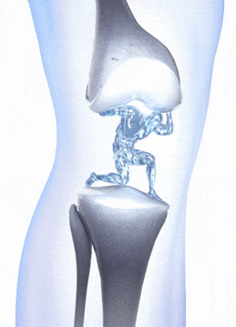
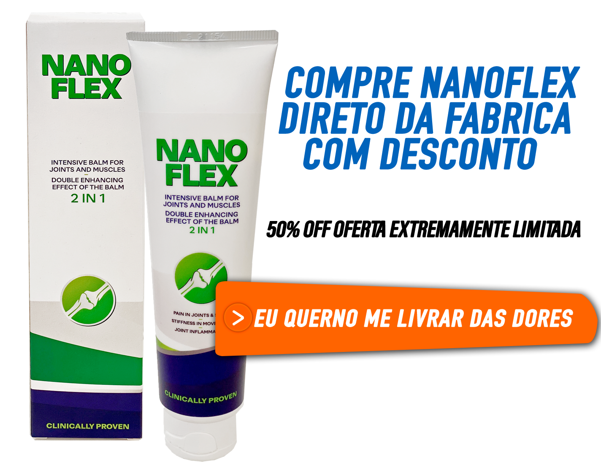

RTP > Jornalismo > Saúde >
Exclusívo: 1 Utilização Deste Creme Pode Eliminar Todas as Dores Articulares e Curar Artrite, Artrose e Osteoporose
Veja como o Sílvio Santos, 91 anos, recuperou completamente seus movimentos, e se livrou de todas dores articulares. (ATENÇÃO: Não é Paracetamol ou Condres)
Como cerca de 2 milhões de portugueses, Sílvio Santos, 91 anos, sofria com artrite, artrose e osteoporose. Hoje, Sílvio Santos diz que sua vida é tão boa quanto no auge dos seus 18 anos.
Sílvio tentou cirurgias e Paracetamol para tratar suas dores, mas sem sucesso. Na verdade teve resultados opostos, à longo prazo ele perdia parte dos movimentos e ficava cada vez mais limitado por conta dos efeitos colaterais do remédio.
Sílvio revela que chegou a andar de cadeira de rodas, devido ao risco de queda e as dores constantes.
Milhares de portugueses têm queixas semelhantes. Em um estudo recente nos EUA, homens e mulheres acima de 40 anos que usam Parecatamol há 5 anos ou mais, mostra que 70% teve câncer no fígado e sofrem de perda de memória.

Determinado a encontrar uma solução, Sílvio pesquisou diversos tratamentos...
Mas quase todos tinham as mesmas limitações do Paracetamol: se ele quisesse usar, teria de enfrentar os horríveis efeitos colaterais.
Sem idéias, Sílvio Santos procurou a ajuda de seu médico Ortopedista Dr. Paulo Trindade.
Dr. Paulo Trindade revela que à algum tempo ele vem indicando um suplemento totalmente natural para seus pacientes e tem tido excelentes resultados.
Dr. comprova esses resultados mostrando um teste clínico feito em 22.900 homens e mulheres, onde 97% dos pacientes testados curaram a osteoporose, artrite e artrose, e se livraram de todas as dores.
Suplemento natural conhecido como Nanoflex, tem sua tecnologia patenteada TRTT, que torna esses ingredientes absorvidos 185 vezes mais potentes do que os tradicionais. São indicados para quem sofre de:
- Dores Articulares;
- Dores Ósseas;
- Dores nas Juntas;
- Artrite, Artrose e Osteoporose;
Por Que Sílvio Santos fala sobre isso abertamente?
Em depoimento, Sílvio Santos afirma querer ajudar outras pessoas. Veja abaixo:
"Os meus resultados foram impressionantes, 1 dia após a primeira utilização, já consegui me movimentar super melhor, e as dores sumiram parcialmente.
Minhas filhas ficaram surpresas, depois de anos, eu finalmente podia deixar elas sem preocupações.
E eu tive dificuldades em achar algo que não fizesse mal à saúde e, que realmente resolvesse esse grande problema.
Artrite, artrose e osteoporose não são problemas simples. Causam mortes, causam depressão, causam dependência.
Diante de tudo isso, eu me senti na obrigação de ajudar outras pessoas. Não pude ser egoísta.
Nanoflex vai transformar a vida de cada pessoa que o tomar todos os dias. Vale cada centavo. Se eu soubesse dos resultados, pagaria até 10 vezes mais." - Sívio Santos com exclusividade ao RTP.
Depoimentos de quem usa
Comprei o Nanoflex para minha mãe que sofria muito com articulações, isto tirou as dores com a mão... mto bom, com certeza voltarei a comprar!!
Posted by Djonatan Silva on Sunday, October 13, 2019
O link do site oficial está no artigo, é melhor não pedir em nenhum outro lugar, devido ao sucesso, tem muito lugar que falsifica o Nanoflex
Posted by Bruno Silva on Sunday, October 13, 2019
Nanoflex foi uma bênção na vida dos meus avós, compramos logo o kit com várias unidades pra eles 🙏 Obrigado Silvio, por compartilhar isto com a gente...
Posted by Bruno Silva on Sunday, October 13, 2019
Eu não vou falar nada, apenas vejam a foto do antes e depois dos meu avô:
Posted by Paulo Sergio De Souza on Sunday, October 13, 2019
Excelente Notícia para Leitores do RTP
O fabricante do Nanoflex entrou em contato com nosso reportagem e disponibilizou 1743 potes para nossos leitores antes que acabe o estoque.
Nanoflex é um suplemento natural, sem efeitos colaterais e aprovado pela ASAE.
Para garantir o seu, basta acessar o site oficial do fabricante.

(Últimos pacotes disponíveis!)